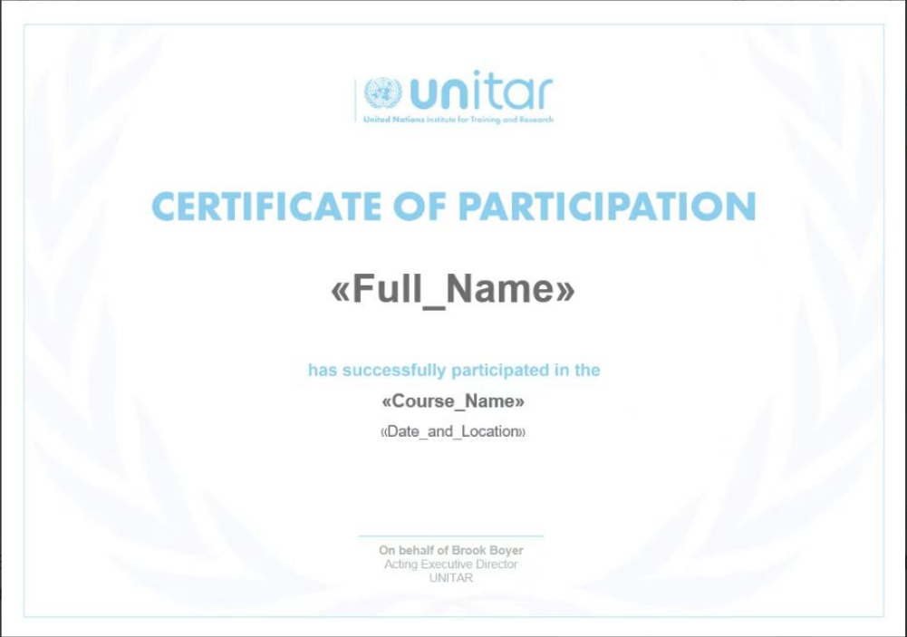

学院通知 · 教学通知
项目发布 |【大川视界】关于选派研究生参加2025年暑期日本联合国训研所可持续发展项目（非学分）的通知
发布时间：2025-03-19
为拓展学生国际视野，提高国际胜任力，学校现开展“大川视界”2025年日本·广岛联合国训研所可持续发展暑期项目（SDGs）（非学分）研究生报名工作， 报名日期：即日起至2025年4月10日。 现就有关事项通知如下： 一、项目信息 项目地点：日本广岛、福冈。 项目时间：2025年7月13日-2025年7月19日 国际组织：联合国训研所·广岛 https://unitar.org/hiroshima 联合国训练研究所（UNITAR）是联合国大会1963年决议设立的直属自治机构，是联合国大会直属的最高级别事务执行机构，总部设于瑞士日内瓦。在全世界有4个主要官方办事处，分别是日内瓦总部、纽约办事处、广岛办事处以及波恩办事处。 日方学校：广岛大学。 具体日程及项目详情请参见：附件1：联合国训研所可持续发展项目（SDGs）（日本）简介。 备注：因受联合国训研所客观工作安排，行程可能略有调整，但不会降低课程质量，尽量做到提前通知。 二、项目选派条件 1. 拥护中国共产党的领导、热爱祖国、政治立场坚定、品德优良、身心健康，具备在日本进行独立学习及生活能力的全日制在校本科生（不包括毕业年级），专业不限； 2. 学习成绩优良，综合素质较高，无不良嗜好； 3. 对国际组织实习、工作和运作感兴趣； 4. 语言条件：雅思5.5，或托福65，或多邻国90，或四级450，或六级430，或专四/专八合格； 5. 具备相应的经济能力，能承担在日本学习、生活的相关费用； 6. 学生在项目期间需严格遵守当地法律法规和参访的国际组织规章制度，自觉维护国家利益、民族尊严和学校荣誉。 三、项目费用 项目费： 9,800 元人民币/人 费用包含：行前辅导、项目期间住宿（含早餐）、项目期间统一行程内的交通费、保险费、联合国训研所课程、广岛及福冈人文体验活动、一次欢迎晚宴、一次欢送午餐、嘉宾讲座、场地等费用。 费用不含：中日国际往返机票、签证费及相关费用、中餐晚餐、项目期间个人消费以及因个人需求产生的额外费用等。 四、项目收获 证书获得：联合国训练研究所官方项目证书 五、报名时间及方式 校内报名时间：请于报名截止日期2025年4月10完成“六、申请及派出流程”中研究生院的审批手续，完成后会通知后续报名事宜。 六、申请及派出流程 申请人：登录四川大学研究生管理系统——国际交流资助申请应用，选择“寒暑假访学项目申请”，选择相应的访学项目，填写申请，提交并打印出纸质《申请表》，将纸质《申请表》递交导师、学院审核。 导师：登录四川大学研究生管理系统——国际交流资助申请应用，在“寒暑假访学项目”中审核并在纸质版《申请表》上签署意见、签字。 学院：学院研究生教务老师登录四川大学研究生管理系统——国际交流资助申请应用，在“寒暑假访学项目”中审核，并由学院主管领导在纸质版《申请表》上签署意见、签字、盖公章。 学院审核后，纸质《申请表》以学院为单位报研究生院3-325培养办公室。 申请人回国后，登录四川大学研究生管理系统——国际交流资助申请应用，在“寒暑假访学项目”申请页面中填写并提交回国总结及以下材料： 1. 回校证明（包含项目名称、访学开始和结束时间并由辅导员老师签字） 2. 护照首页、签证页及标有出入境日期的页面 3. 官方颁发的项目证书或成绩单 七、出国（境）备案流程 四川大学在籍学生在出国或前往港澳台地区交流学习前，必须通过四川大学学生出国（境）网上备案系统办理备案。备案之后，出国、赴港澳、赴台后续办理程序有所不同，请根据不同目的地选择相应程序。未经备案，学校将不予办理财务报销、成绩认证、学分转换等相关手续和服务：https://global.scu.edu.cn/?channel/490/504 八、咨询电话： 研究生院：85405146 （校内报名咨询） 国际合作与交流处：85404255 （项目咨询） 项目方中国办公室：谢老师18516384883， QQ群：993042091（项目介绍、项目分享、出国手续等）。 九、项目宣讲： 第一场次：2025年3月22日（周六）20:00-20:30 腾讯会议：779-862-183 第二场次：2025年3月29日（周六）20:00-20:30 腾讯会议：530-773-004 第三场次：2025年4月5日（周六）20:00-20:30 腾讯会议：226-240-778 附件1-联合国训研所可持续发展项目（SDGs）（日本） <!--
